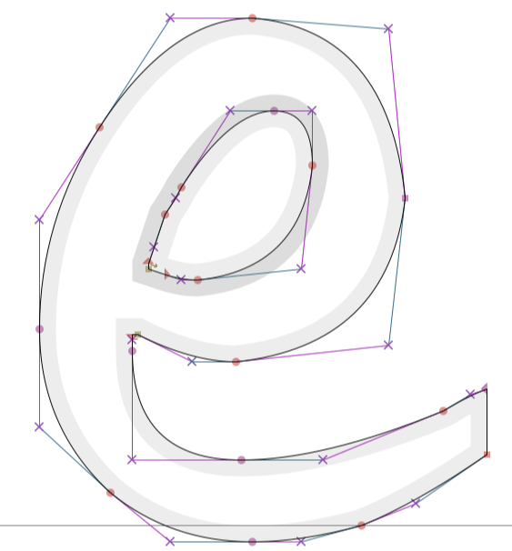

Bezier curves (or "B-curves") are often used in computer graphics & design to define smooth, flowing shapes.
Have you ever wondered why digital fonts can be resized to arbitrarily large sizes and they still look good and smooth?
Digital fonts aren't images. They don't have resolution issues because they are defined using Bezier curves. As the font changes size, the shapes you see are re-interpolated based on the position of the points defining the Bezier curves. So you have secretly seen thousands of very tiny Bezier curves every time you look at a web browser.

images via "The Mathematics behind Font Shapes --- Bézier Curves and More" - jdhao.github.io
A Bezier curve is a polynomial curve. For example:
x) are just straight lines.x^2) are parabolas.x^3) are more useful for vector art, so these are the kind you've probably seen the most.However, the user defines them in terms of "anchor points" and "control points" rather than as a polynomial equation d*x^3 + c*x^2 + b*x + a.
drafted 2023-04-03 as a followup exercise from event-horizon